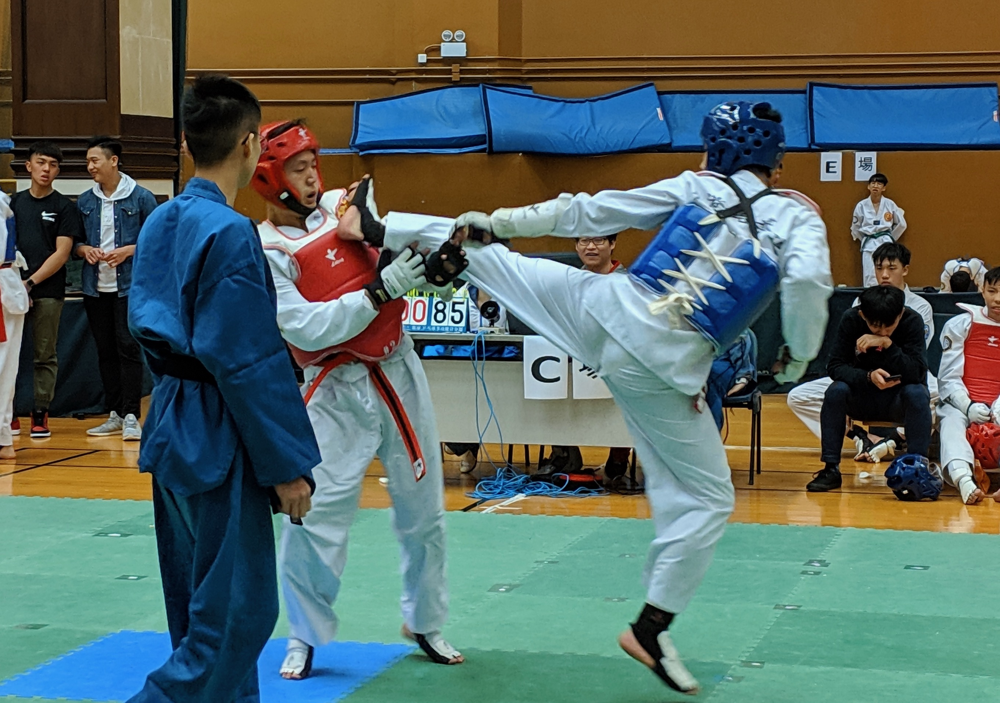

Hi! This is Issac To, a penultimate year Computer Science student at King's College London.
I aspire to become a software developer and make the world a better place with technology!
I graduated from Diocesan Boys' School in 2019. I am very grateful for the things that I learnt from my teachers, counsellors and peers at this school.
CS Technical Skills
Software Engineering Projects
1. A Multi-user Chatbox using Java, JavaFx and Amazon Cloud EC2
2. Covid 19 Query Page using Javascript and XML files
Singing in the school choir has long been one of my extracurricular activities.
During high school, I sang in the school senior choir, senior mixed choir and madrigal. I am really glad that during form five,
I got the golden opportunity to serve as the vice chairman of the school's intermediate choir.
In 2017, my friends and I formed the acapella team AKA Harmonic and we've performed in several occasions such as Ted talk and wedding event.
Sports

I have been passionate about Taekwando since primary school and am now a second-stage black belt holder. In 2018 Decemeber, I won the Tuen Mun Yan Ai Taekwando Competition. Although I did not play for my
university's team in my first year, I look forward to joining the team in the coming years.